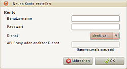
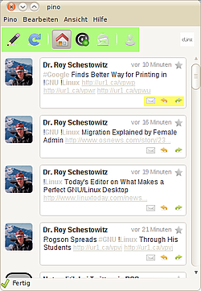

Pino
Archivierte Anleitung
Dieser Artikel wurde archiviert, da er - oder Teile daraus - nur noch unter einer älteren Ubuntu-Version nutzbar ist. Diese Anleitung wird vom Wiki-Team weder auf Richtigkeit überprüft noch anderweitig gepflegt. Zusätzlich wurde der Artikel für weitere Änderungen gesperrt.
Anmerkung: Die Weiterentwicklung von Pino ist eingeschlafen. Alternative Programme sind im Artikel Twitter zu finden.
Zum Verständnis dieses Artikels sind folgende Seiten hilfreich:
Pino  ist ein Mikroblogging-Client für den GNOME-Desktop. Die Oberfläche des Programms, das in Vala geschrieben ist, ist sehr übersichtlich und einfach gehalten. Der erste Version erschien Ende 2009, trotzdem ist die Software schon sehr stabil und bietet Unterstützung für Twitter und Identi.ca, das Indikatorapplet des GNOME-Desktops sowie Rechtschreibprüfung und verschiedene Linkverkürzer.
ist ein Mikroblogging-Client für den GNOME-Desktop. Die Oberfläche des Programms, das in Vala geschrieben ist, ist sehr übersichtlich und einfach gehalten. Der erste Version erschien Ende 2009, trotzdem ist die Software schon sehr stabil und bietet Unterstützung für Twitter und Identi.ca, das Indikatorapplet des GNOME-Desktops sowie Rechtschreibprüfung und verschiedene Linkverkürzer.
Hinweis:
Mit der Umstellung von Twitter auf OAuth sind alle Versionen von Pino älter als 0.3 nicht mehr nutzbar - dies betrifft sowohl die Version aus den offiziellen Paketquellen als auch das nachfolgend genannte PPA. Eine erste Beta-Version von Pino 3 ist verfügbar, liegt aber nur im Quellcode vor.
Mit der Nutzung eines Twitter-Proxys wie z.B. supertweet.net ist die Nutzung jedoch weiterhin möglich. Eine Anleitung zur Konfiguration findet man im Blogbeitrag How to use Pino with the new stand-alone SuperTweet TwitterAPI proxy . Eine ältere Möglichkeit zeigt Pino ohne OAuth mit Twitter nutzen  (09/2010).
(09/2010).
Installation¶
Pino ist nur für Ubuntu 11.10 in den offiziellen Paketquellen enthalten. Folgendes Paket muss installiert [1] werden:
pino (universe)
 mit apturl
mit apturl
Paketliste zum Kopieren:
sudo apt-get install pino
sudo aptitude install pino
PPA¶
Unter Ubuntu 10.04 muss man daher auf ein "Personal Package Archiv" (PPA) [2] ausweichen. Das erste PPA wird nur für eine Abhängigkeit von Pino benötigt:
Adresszeile zum Hinzufügen des PPAs:
ppa:vala-team/ppa
Hinweis!
Zusätzliche Fremdquellen können das System gefährden.
Ein PPA unterstützt nicht zwangsläufig alle Ubuntu-Versionen. Weitere Informationen sind der  PPA-Beschreibung des Eigentümers/Teams vala-team zu entnehmen.
PPA-Beschreibung des Eigentümers/Teams vala-team zu entnehmen.
Damit Pakete aus dem PPA genutzt werden können, müssen die Paketquellen neu eingelesen werden.
Adresszeile zum Hinzufügen des PPAs:
ppa:troorl/pino
Hinweis!
Zusätzliche Fremdquellen können das System gefährden.
Ein PPA unterstützt nicht zwangsläufig alle Ubuntu-Versionen. Weitere Informationen sind der PPA-Beschreibung des Eigentümers/Teams troorl zu entnehmen.
Damit Pakete aus dem PPA genutzt werden können, müssen die Paketquellen neu eingelesen werden.
Nachdem die Fremdquellen hinzugefügt sind, kann Pino über folgendes Paket installiert [1] werden:
pino (ppa)
mit apturl
Paketliste zum Kopieren:
sudo apt-get install pino
sudo aptitude install pino
|  |
| Konto hinzufügen |
Konfiguration¶
Nachdem Pino installiert wurde, müssen ein oder mehrere Nutzerkonten angelegt werden. Der rechts zu sehende Konto "Hinzufügen"-Dialog wird beim ersten Start von Pino automatisch geöffnet. Die Textfelder sind dabei selbsterklärend benannt. Das Feld "Api Proxy oder anderer Dienst" wird nur benötigt, wenn man einen anderen, zu Twitter kompatiblen Dienst verwenden möchte.
Nutzung¶
Die markierten Buttons sind jeweils von links nach rechts:
| Buttonbedeutungen | |
| 1. | Neuer Tweet |
| 2. | Aktualisieren |
| 3. | Timeline anzeigen |
| 4. | Mentions anzeigen |
| 5. | Direktnachrichten anzeigen |
| 6. | Benutzerinfo anzeigen |
| 1. | Direktnachricht an den Absender schreiben |
| 2. | Antwort |
| 3. | Retweeten |
 Wer nicht immer zur Maus greifen will, dem seien hier die Tastenkürzel empfohlen:
| Tastenkürzel | |
| Tasten | Funktion |
| Strg + U | Im eingegebenen Tweet vorhandene URLs kürzen |
| Strg + N | Neuer Tweet |
| Strg + 1 | zur Timeline wechseln |
| Strg + 2 | zu den Mentions wechseln |
| Strg + 3 | zu den Direktnachrichten wechseln |
| Strg + 4 | zur Benutzerinfo wechseln |
| Strg + M | Menüleiste anzeigen/ausblenden |
| Strg + D | Neue Direktnachricht |
| Strg + R | Aktualisieren |
 Übersichtsartikel
Übersichtsartikel- Erstellt mit Inyoka
-
 2004 – 2017 ubuntuusers.de • Einige Rechte vorbehalten
2004 – 2017 ubuntuusers.de • Einige Rechte vorbehalten
Lizenz • Kontakt • Datenschutz • Impressum • Serverstatus -
Serverhousing gespendet von